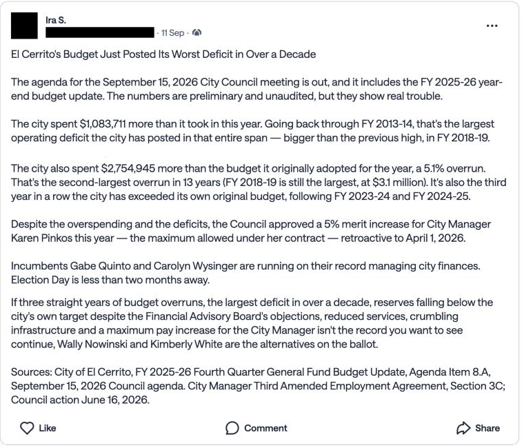
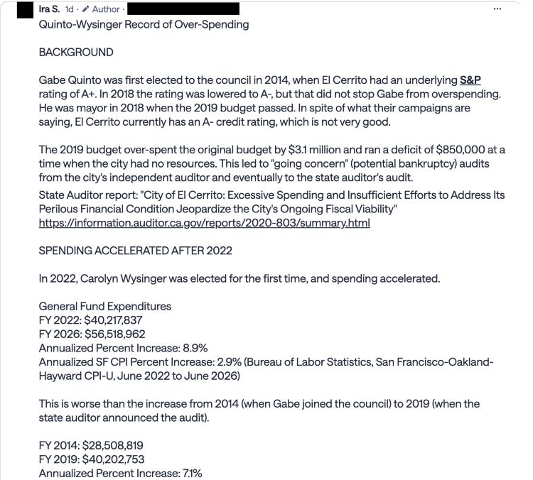
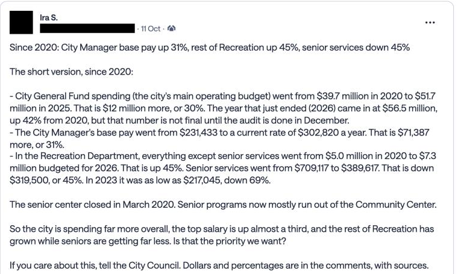

This page tests the claims made in Ira Sharenow's Finance pages against the City's audited annual reports, Council budget updates, CalPERS valuations and State Controller data. Candidates' own statements are checked on the candidates page.
Underlying data: download the Excel workbook.
"Framed" means the number is right but the presentation points to a conclusion the full data doesn't support. "Material omission" means the claim is accurate as far as it goes but leaves out something that changes the picture.
| Claim | Page | Verdict | What the full data shows |
|---|---|---|---|
| Revenue vs. spending chart: spending crosses above revenue in FY2026 | Finance home, Budget vs. Actual | Misleading | FY2014–25 points exclude transfers between funds; the FY2026 point includes them (+$2.76M to spending, +$1.11M to revenue). On one consistent basis FY2026 revenue ($54.3M) still exceeds spending ($53.8M). The fund-balance draw comes from transfers out, including a one-time cost of more than $1M to wind up the former redevelopment agency. |
| "FY2025-26 is a preliminary $1.08M deficit, the first since FY2018-19" | Budget vs. Actual | Accurate | True on net change in fund balance. Against the original budget, which planned a $16K surplus, the result was $1.1M worse. Section 2 lists what the Council added during the year. |
| Spending exceeded the original budget in 10 of 13 years | Budget KPI Model (KPI 2) | Accurate | Correct. The page's point that the original budget is the plan the Council commits to, and that it routinely left out foreseeable costs, is fair. Section 2 shows what the additions were. |
| "$2,754,945 over the original adopted budget in FY2026, the largest gap" | Budget vs. Actual | Accurate | Correct arithmetic (FY2026 is unaudited). Of the gap, about $2.0M is transfers (including the Successor Agency wind-up), $1.1M other Council-approved additions, offset by about $0.4M left unspent. FY2024 had a larger gap ($3.9M) once transfers are counted the same way. |
| "The budget is revised upward by an average of roughly $2.9 million … in each of the last three fiscal years" | Budget KPI Model | Framed | The three figures mix bases: FY2024 and FY2025 exclude transfers, FY2026 includes them. Consistently counted, the average is $2.2M without transfers or $4.1M with them. The three-year window is also the period right after reserves were rebuilt, when the Council chose to spend some of them on one-time items. Over 12 audited years the average revision was $1.0M. See Section 2. |
| Spending grew 2.7x faster than inflation (FY2021 to FY2026) | Budget KPI Model (KPI 3) | Cherry-picked base | FY2020-21 spending dipped below the two prior years (pandemic closures, vacancies), and the endpoint switches basis. From FY2018-19 to FY2024-25 spending grew 1.4x as fast as Bay Area inflation; from FY2013-14 about 2x. Spending did outpace inflation, by less than the page shows. |
| General Fund deficits in FY2014, 2015, 2018, 2019 | Budget KPI Model (KPI 1) | Accurate | Correct for revenue vs. expenditure before transfers. Every year FY2019-20 through FY2024-25 passed this test, which the page also states. |
| Going-concern audit language 2013–2014 and 2017–2020 | Going-Concern Audits | Accurate | Matches the audited reports, including its removal in FY2021. |
| State Auditor "high risk" designation (2021) and findings | State Auditor Report | Material omission | Quotes are accurate, but the page stops in 2021. The Auditor's report 2024-801 (Dec. 2024) removed the designation after finding the City had taken satisfactory corrective action. |
| Credit rating cut to BBB− in 2020, raised to BBB in 2023 and A− in 2025 | Credit Rating History | Accurate (taken as given) | Not independently confirmed here; treated as accurate. The page itself documents a strong recovery: three notches back up from the 2020 low, with S&P citing "sustained structural balance, robust reserves." |
| Annual short-term borrowing (TRANs) through FY2022 | TRAN Borrowing | Accurate | Matches the balance sheets ($5M–$9M notes FY2016–FY2022, none after). Ending this is a real improvement. |
| Redevelopment-agency asset transfer and clawback | RDA Dissolution | Balanced | Carefully sourced; says no evidence supports fraud and that other cities did the same. Events date to 2011–2018. |
Ira also posts budget analysis on Nextdoor, where he announced his Finance pages on Sept. 28. These are the General Fund figures from his recent budget posts, checked the same way. His salary and Recreation-division figures fall outside this analysis's data and weren't checked.
| Claim | Post | Verdict | What the full data shows |
|---|---|---|---|
| "The city spent $1,083,711 more than it took in … the largest operating deficit … going back through FY 2013-14 … bigger than the previous high, in FY 2018-19" | Nextdoor post, Sept. 11Screenshot: Ira post, Sept. 11 | Mixed basis | $1.08M is the change in fund balance, which counts transfers to other funds. On that measure FY2014 was nearly as large (−$1.07M) and FY2019 was only −$0.14M, so FY2019 wasn't the previous high. FY2019's −$0.85M (the figure in his Oct. 18 comment) is revenue minus spending before transfers; on that basis FY2026 had a surplus of about $0.57M ($54.3M vs. $53.8M). |
| "$2,754,945 more than the budget it originally adopted … the second-largest overrun in 13 years (FY 2018-19 is still the largest, at $3.1 million)" | Nextdoor post, Sept. 11Screenshot: Ira post, Sept. 11 | Framed | The arithmetic is right, but the FY2026 figure counts transfers and the FY2019 figure doesn't. Counting transfers both ways, FY2024 was larger ($3.9M); leaving them out, FY2026 was about $0.76M over. See Section 2. |
| "The third year in a row the city has exceeded its own original budget" | Nextdoor post, Sept. 11Screenshot: Ira post, Sept. 11 | Accurate | Before transfers: FY2024 +$0.82M, FY2025 +$1.14M, FY2026 +$0.76M over the original budget. More with transfers. |
| "Reserves falling below the city's own target" | Nextdoor post, Sept. 11Screenshot: Ira post, Sept. 11 | Not supported | The Q4 update he cites as his source puts unassigned reserves at an estimated 22% for FY2026 (26% in FY2025) and says the City "is not currently projected to dip below" the 17% level. The June budget had projected 16% for FY2028. |
| "The 2019 budget over-spent the original budget by $3.1 million and ran a deficit of $850,000" | Nextdoor comment, Oct. 18Screenshot: Ira comment, Oct. 18 | Accurate | FY2019 spending was $40.2M against a $37.1M original budget; revenue was $39.4M, a $0.85M shortfall before transfers. |
| General Fund spending rose from $40,217,837 (FY2022) to $56,518,962 (FY2026), "8.9%" a year vs. 2.9% inflation, faster than 2014–2019 (7.1%) | Nextdoor comment, Oct. 18Screenshot: Ira comment, Oct. 18 | Overstated | The FY2022 figure excludes transfers; the FY2026 figure includes $2.76M of them. Counted consistently, spending grew 7.5% a year: still well above inflation and slightly faster than 2014–2019, which he calculates consistently. |
| General Fund spending went from $39.7 million in 2020 to $56.5 million in 2026, "up 42%" | Nextdoor posts, Oct. 11 and 12Screenshot: Ira post, Oct. 11 | Overstated | Same mixed basis. Without transfers, FY2026 spending was $53.8M, up 35% from FY2020's audited $39.7M. His FY2020–FY2025 figure (+30%) is consistent. |
| "El Cerrito currently has an A- credit rating, which is not very good" | Nextdoor comment, Oct. 18Screenshot: Ira comment, Oct. 18 | Opinion | A− matches the rating history on Ira Sharenow's Finance pages: up three notches from the 2020 low, with S&P citing robust reserves. Whether that is "not very good" is a judgment. |
The lead chart plots actual General Fund revenue and spending. For FY2014–25 it uses audited figures without transfers between funds. For FY2026 it uses the Q4 report's totals, which include transfers. Toggle to see the effect.
Most of the basis problem comes down to transfers between funds. How do transfers work? explains them, with a year-by-year breakdown.
One of the central arguments on Ira Sharenow's Finance pages, and from candidate Kimberly White, is that the original adopted budget is the standard to judge by. It is the plan the Council debates and commits to in June. Mid-year amendments, however well-intended, mean that plan didn't hold. This section measures spending against the original budget and lists what the Council added, so readers can judge whether those additions were necessary.
Expenditures plus transfers out, actual minus original adopted budget. FY2014–FY2025 audited budget schedules; FY2026 from the Q4 update (unaudited). FY2020, FY2021 and FY2023 came in under the original budget.
Itemized lists from the Q4 budget reports (Sept. 2024, Sept. 2025, Sept. 2026). Bars above zero are additions by category; the bar below zero is budgeted money that went unspent. The dot is the net amount spent above the original budget, which matches the chart above.
| Category and items | FY2024 | FY2025 | FY2026* |
|---|---|---|---|
| Capital, facilities and equipment | $2,925,509 | $975,000 | $1,262,935 |
| FY2024: property purchase (10936 San Pablo Ave.) $1,604,631; park and facility deferred maintenance $1,084,800; landscape contract $86,078; Arlington Park $75,000; Fire Station 52 generator $75,000. FY2025: pool repair $500,000; fire truck set-aside $380,000; fire vehicle maintenance $95,000. FY2026: Swim Center $945,400; Council Chambers audio-visual $317,535. | |||
| Pension prefunding (Section 115 trust) | $1,000,000 | – | – |
| Staffing and program demand | $1,499,000 | $225,000 | – |
| FY2024: recreation staffing for increased programs $510,000; community development staffing for permit volume $466,000; fire overtime during emergency engine repairs $337,000; inspections, emergency tree work, filled vacancies $186,000. FY2025: childcare $115,000; youth instructors $60,000; swim staffing $50,000. | |||
| Labor contracts and insurance | $382,754 | $391,482 | $120,116 |
| FY2024: insurance premium and SEIU contract $376,484; Council salary $6,270. FY2025: police and fire association contracts $354,860; SEIU $36,622. FY2026: firefighters' contract $120,116. | |||
| Prior-year purchase orders carried forward | (incl. above) | $603,425 | $291,695 |
| Elections, districting, studies, legal and other | $399,269 | $278,000 | $330,163 |
| FY2024: Safety Element $184,269; Measure R public information $125,000; cyber-attack deductible $90,000. FY2025: service delivery study $120,000; HR legal $60,000; library project $45,000; abatement $35,000; election and records $18,000. FY2026: switch to district elections $250,000; special election $80,163. | |||
| Redevelopment cleanup | $350,000 | – | $1,142,493 |
| FY2024: repayment of the 2016 MSC loan, directed to Del Norte streets. FY2026: Feb. 17 mid-year amendments, mainly the Successor Agency close-out transfer of $1,045,493 (see What was the Successor Agency payment?), plus library initiative fiscal report $29,500, Community Development Director recruitment $30,000, storm tree work $30,000 and a pickleball fee transfer $7,500. | |||
| Total added during the year | $6,556,532 | $2,472,907 | $3,147,402 |
| Net spent above original budget (after unspent amounts) | $3,940,000 | $1,640,000 | $2,755,000 |
* FY2026 unaudited. FY2024 purchase-order carryover ($1.0M) is included in the item totals rather than listed separately. FY2022 and FY2023 additions ($2.4M and $2.7M before transfers) were approved item by item at mid-year and are not itemized in one table; by function they went mostly to community development (permit-driven staffing, partly offset by higher plan-check fees), public safety, general government and public works.
The KPI page averages FY2024 ($3.52M), FY2025 ($1.97M) and FY2026 ($3.13M). The first two leave out transfers; the third includes them. Counted the same way, the three-year average is $2.2M without transfers or $4.1M with them.
The window matters too. FY2024–26 followed a three-year rebuild that took reserves to roughly 40–50% of spending. The largest FY2024 items were a property purchase, a $1.0M deposit into the pension trust, and $1.1M of deferred maintenance: one-time uses of reserves the Council voted on, not spending that crept in. Across the 12 audited years the revision averaged $1.0M; from FY2014 to FY2021 it averaged about $0.2M.
The underlying point still stands. Each year's additions included items that were predictable in June: labor contracts (about $0.4M in FY2024 and FY2025), fire apparatus, pool repairs and prior-year purchase orders. Putting those in the original budget is what budget discipline means. The FY2027-28 budget responds partly by adding annual set-asides for vehicle, equipment and facility replacement. Whether the remaining items were necessary is a judgment the lists above let readers make.
For reference, spending came in below the amended budget in each of these years by about $2.6M, $0.8M and $0.4M (where it went unspent).
KPI 3 indexes spending and Bay Area inflation to FY2020-21. That year spending dipped below the two prior years, because recreation was closed and positions were vacant. Pick a different starting year.
Expenditures exclude transfers in every year, including FY2026 (unaudited). CPI: BLS series CUURA422SA0, June values. Spending growth includes restoring services after the pandemic, labor contracts following a 2024 compensation study, and pension contributions that rose from $4.6M to $10.3M a year (FY2016–FY2025).
The General Fund went from a negative balance in FY2019–2020 to $24M in FY2025. Policy changed, but mostly after the rebuild had happened.
Before 2020. The City ran deficits in eight of eleven years from FY2010 to FY2020 (State Auditor). Its policy asked for a reserve of only 10% of spending, and it never reached that. Dissolution of the redevelopment agency in 2012 removed about $1M a year of support for City functions, and the General Fund absorbed $1.3M of the state clawback. Pension contributions rose by more than half between FY2016 and FY2020. The City borrowed $5M–$9M each year (TRANs) to cover cash flow.
FY2021 to FY2023. The rebuild was revenue-driven. Voters approved a real property transfer tax (Measure V, November 2018), which has brought in $3.2M–$5.3M a year since FY2020. The City moved $6.1M of federal pandemic relief (ARPA) into the General Fund in FY2021–22. Revenue beat the original budget by $3.9M–$7.6M a year as the economy recovered, while pandemic closures and vacancies held spending down. The fund balance rose from −$0.1M to $23.1M in three years.
Policy since. In August 2023 the Council amended its financial policy: 17% of spending held as unassigned reserve, plus 13% in a separate Emergency Disaster Relief Fund. Separately, the City has built a Section 115 pension trust that now holds $3M.
The outlook has moved. The February 2026 mid-year forecast warned reserves could fall below 17%. The budget adopted in June projected 18% in FY2027 and 16% in FY2028. After FY2026 ended $2.1M better than planned, the Sept. 15, 2026 year-end update projects the unassigned reserve staying above 17% through FY2037-38, but only about $2M above the floor for the next few years.
Unassigned excludes the Emergency Disaster Relief reserve ($9.0M FY2024, $7.5M FY2025) and the pension trust. FY2026 balance is the Q4 report's unaudited estimate; its 22% unassigned figure is the City's. FY2027 and FY2028 are read from the City's Sept. 15, 2026 forecast chart (about $12.1M, roughly 21% and 20%); the June adopted budget had projected 18% and 16%. The policy floor was 10% before August 2023. GFOA's two-month guideline (16.7%) applies to all unrestricted balance, which would include the disaster reserve; on that measure the City stays near 29%.
CalPERS' own valuations put the City's plans about 71% funded, and the required payments toward the unfunded liability keep rising before they level off.
Valuation dates June 30, 2015–2025. Market value of assets vs. entry-age accrued liability (CalPERS funding basis).
FY2025-26 to FY2027-28 required; later years projected by CalPERS assuming 6.8% returns. Normal cost for current employees is on top of these amounts.
State Controller data covers all city funds, so it compares cities on the same basis.
Source: California State Controller, City Expenditures Per Capita (dataset ykhf-vfsr). Emeryville and Berkeley omitted for scale ($7,935 and $4,814 in FY2024). Cities that contract out police or fire (Hercules, Pleasant Hill) are not like-for-like.
Public safety dominates the net cost. Recreation, community development and much of public works are partly paid for by fees and grants, so cutting them saves less than their gross budgets suggest.
From the audited statement of activities (full accrual, all governmental funds). Net cost is what general taxes must cover.
| Lever | Rough size per year | Constraints |
|---|---|---|
| Budget known costs in June (contracts, apparatus, repairs, carryover) | $0.4–1.5M of each year's additions | Doesn't reduce spending; makes the adopted budget honest about it, so tradeoffs happen in public before the year starts. |
| Fill police/fire vacancies to cut overtime | $0.5–0.7M | FY2026 overruns came from vacancies, a paramedic shortage and minimum-staffing rules. Depends on hiring, not on votes. |
| Stop funding one-time capital from reserves | $0.5–3M (lumpy) | FY2024 used $2.9M (land, park repairs); FY2026 about $1.3M. Deferring it shifts cost to later or lets assets decay. The new set-asides move it into the ongoing budget instead. |
| Prepay the CalPERS bill annually; use the $3M pension trust to smooth the peak | ~$0.3M | Requires cash on hand in July; trust money is restricted to pensions. |
| Labor costs (71% of General Fund spending) | Large but slow | Set by multi-year contracts. Pension payments for past service are contractual and cannot be cut. |
| Cut non-safety services | Net cost: recreation $1.8M, community dev. $1.4M, public works $2.1M | Closing a $1M ongoing gap this way means cutting about one-fifth of the combined net cost of those three. |
| New revenue | Varies | Utility tax on streaming begins Fall 2026. Transfer-tax receipts have ranged from $3.2M to $5.3M a year since FY2020. New taxes need voter approval; Measure C failed 70–30. |
Government finance standards don't ask for that. GFOA's best practice is structural balance: recurring revenues should cover recurring expenses. Reserves are meant to absorb shocks and pay for one-time items, within a policy floor.
Two conditions make using reserves defensible. Recurring costs (raises, staffing) must not be funded with one-time money; the City says its FY2027-28 budget keeps ongoing revenue above ongoing spending, which can't be checked without the full budget book. And the reserve floor has to hold. The June budget projected a dip to 16% in FY2028, about $0.6M below target. After FY2026 came in $2.1M better than planned, the Sept. 15 forecast no longer shows a dip, though the cushion is only about $2M for the next few years. That is small relative to the budget, but it comes as pension payments rise and the revenue base leans on volatile transfer taxes.
Captured October 19, 2026 from Ira Sharenow's public Nextdoor posts. Other residents' names and photos and all neighborhood labels are blacked out.


